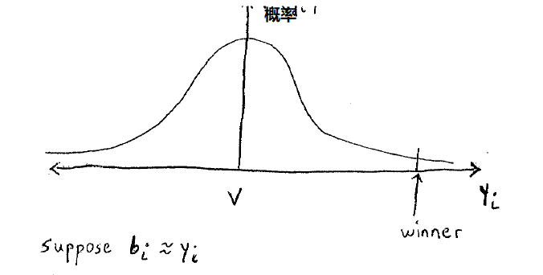

Lecture 24
为什么会陷入赢家陷阱（winner‘s curse）？
拍卖者购买拍卖品的价格远高于原有的价格。
出最高价的人的payoffs = ，其他人的收益是0。
每一个人估计的价格是
概率分布：

通过上面价格的分布，因此最后赢家的出价一定会远远大于商品本身的价值。
这里有一个竞标的思想的转变：
就是一旦我竞标成功了，那么我一定是全场出价最高的，这个时候只有我会关注商品真正的价格。
因此，我们在竞价的时候，我们应该假设我们已经赢了，并且做出相应的竞价。
这样，当我们真正赢了，这样我们就不会后悔了。
拍卖的种类
- 类似于盲盒一样的拍卖。
- 拍卖盲盒，出价最高的获得商品，但是只支付出价第二高的钱。
- 一般的逐渐增加价格的拍卖。
- 逐渐降价拍卖：一开始商家出价无限高，不断的降价来让其他的人来买，一旦有人出价了，那么如果有更高价格就往上升，最后出价最高的人获得商品。
1和4的种类完全一样，2和3类似。
下面我们考虑private value auction，上面四种拍卖类型我们应该怎么面对。
你认为的价格是
竞价是
如果你赢了，对于2和3是第二高价格；对于1和4，；否则就是0。
对于2和3，策略：
对于1和4，策略
对于拍卖行，上面两种类型的拍卖所得最后收益都是一样的。